Hierarchical Models
Opening Comments
- Exam
- Workshop
- Paper
Here are the packages we’re using:
Where we’re headed
This week, I introduce the idea of a hierarchical model.
These fall squarely within our probability modeling framework—but with an exciting new twist.
Before: \(x_i \sim f(x_i; \theta)\)
Now: \(x_i \sim f(x_i; \theta_{j[i]})\), where \(\theta_j \sim f(\theta_j; \phi)\)
We have models of parameters \(\theta_j \sim f(\theta_j; \phi)\) analogous to a previous models of data.
Contact in Finland
In my dissertation, I was interested in how survey self-reports of being contacted by a political party varies across electoral districts.
You can see here for the details.
The finland data
For now, let’s just estimate the proportion of people in each district that are contacted by a party.
Let’s start with Finland.
Rows: 1,086
Columns: 2
$ district_id <chr> "District 313", "District 313", "District 310", "District 304", "Dis…
$ contacted <fct> Not Contacted, Contacted, Not Contacted, Contacted, Not Contacted, N…It will be convenient in later steps to have contacted be an indicator and district_id be a nice factor, so let’s do that now.
- Remove “District” from the strings.
reorder()the levels by the average ofcontacted. (Important sneaky trick).
The finland data, tidied up
# load data
finland <- crdata::finland |>
# make contacted an indicator
mutate(contacted = as.numeric(contacted == "Contacted")) |>
# mutate district_id to factor ordered by contact rate
mutate(district_id = str_remove(district_id, "District "),
district_id = reorder(district_id, contacted)) |>
glimpse()Rows: 1,086
Columns: 2
$ district_id <fct> 313, 313, 310, 304, 304, 304, 304, 304, 304, 304, 304, 304, 304, 304…
$ contacted <dbl> 0, 1, 0, 1, 0, 0, 0, 1, 0, 0, 0, 0, 0, 1, 0, 1, 1, 0, 0, 1, 1, 0, 0,…Always scatterplot your data
A scatterplot is a safe and potentially informative way to start.
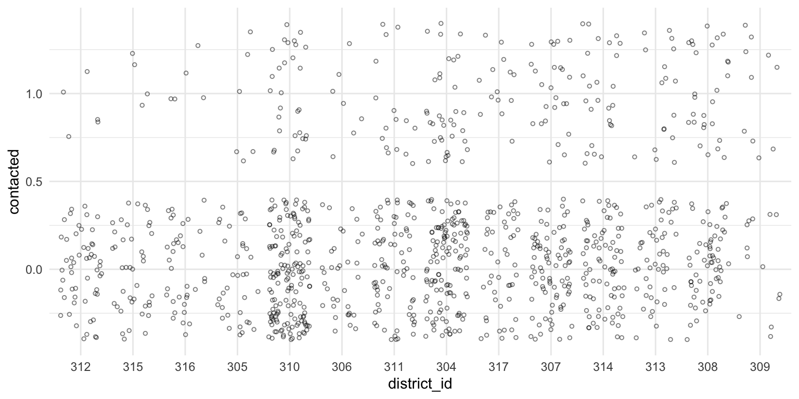
Model, part 1
Now let’s estimate the probability of being contacted by a political party in each district.
Start by writing down a probability model for being contacted. This is a binary outcome, so if we’re going to assume (conditional) independence, it must be Bernoulli.
\[ \text{Contacted}_i \sim \text{Bernoulli}(\pi_j), \]
where \(i\) indexes the respondent and \(j\) indexes the electoral district.
Remember that the ML estimate of \(\pi\) is just the sample mean (or sample proportion).
Estimating \(\pi_j\): a crude first cut
We can do this easily for each district with group_by() and summarize().
Let’s also add an estimate of the standard error using \(\widehat{\text{SE}}(\hat{\pi}_j) = \frac{\sqrt{\hat{\pi}_j(1 - \hat{\pi}_j)}}{\sqrt{n}}\).
estimates <- finland %>%
group_by(district_id) %>%
summarize(pi_hat = mean(contacted),
n = n(),
se_hat = sqrt(pi_hat*(1 - pi_hat))/sqrt(n)) %>%
glimpse()Rows: 14
Columns: 4
$ district_id <fct> 312, 315, 316, 305, 310, 306, 311, 304, 317, 307, 314, 313, 308, 309
$ pi_hat <dbl> 0.0862, 0.0909, 0.1250, 0.1500, 0.1620, 0.1707, 0.1818, 0.2288, 0.22…
$ n <int> 58, 44, 40, 40, 179, 41, 88, 153, 61, 105, 103, 65, 86, 23
$ se_hat <dbl> 0.0369, 0.0433, 0.0523, 0.0565, 0.0275, 0.0588, 0.0411, 0.0340, 0.05…Adding the estimates to the scatterplot
Now let’s add these estimates to the scatterplot.
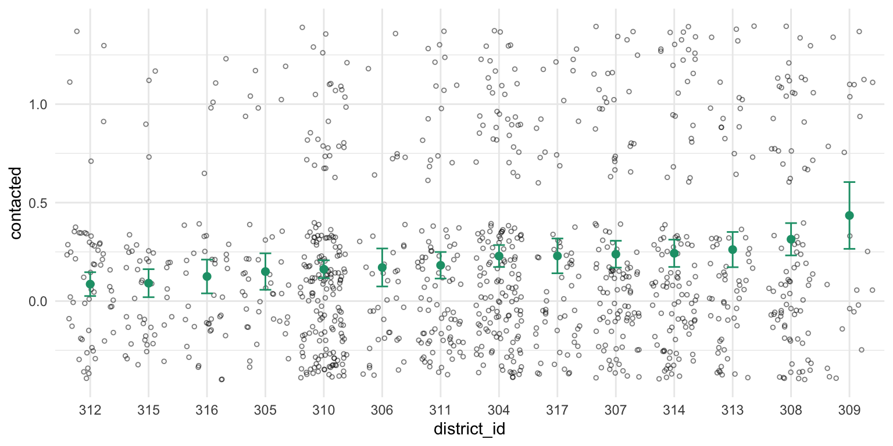
Adding the sample size
You can see that the confidence intervals (and sample size) varies by district, so let’s add that information to the plot.
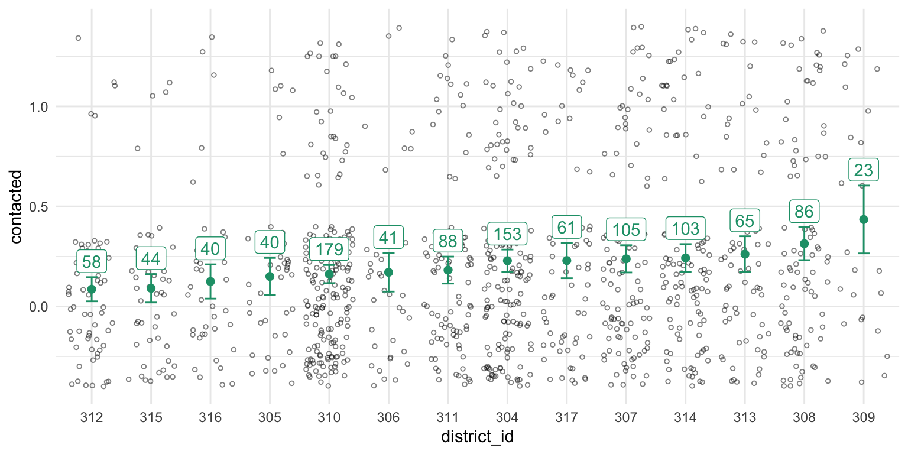
Great! Now we’re done. We’ve got ML estimates of the contact rate for all districts.
But wait… can we do better?
Looking carefully at 309
Let’s look at district 309 on the far right. We our estimate of the contact rate in this district is the highest.
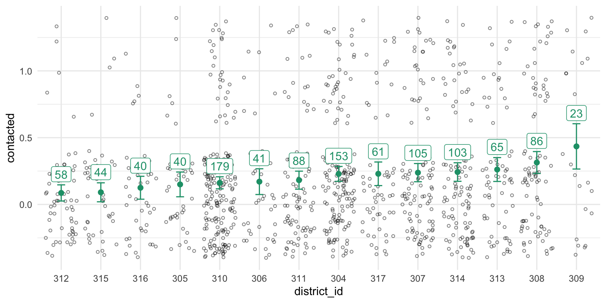
Our estimator \(\hat\pi\) is unbiased, but if you had to say, would you say that the turnout rate in district 309 was higher or lower than \(\hat{\pi}_{309} = 0.40\)?
If your intuition matches mine, you will say lower. Why? This “why?” is an important question.
Why?
- If you think that \(\hat{\pi}\) is a good estimator, but you suddenly want to adjust this particular estimate, you must have additional information coming from somewhere. Where?
- The answer: the other districts. We admit that the contact rate will be different across districts, but it also seems reasonable to assume they will be similar (that’s “different, but similar”). Given that 309 has a small sample and looks relatively unlike the other estimates, we want to pull it down slightly toward the other estimates.
This is exactly the intuition of hierarchical models.
Let’s write down this “different, but similar” intuition.
To do this, it will be convenient to have our \(\pi_j\)s on the logit scale.
Model, part 2a
Start with the likelihood.
\[ \text{Contacted}_i \sim \text{Bernoulli}(\pi_j) \]
Now translate the \(\pi\)s to the logit scale.
\[ \pi_j = \text{logit}^{-1}(\alpha_j) \]
Each of these \(\alpha_j\)s is like a constant term in a logit model with no covariates. (We could add covariates, but that makes the example less clear.)
Model, part 2b
Now for the hierarchical part: we want to capture the notion that these \(\alpha_j\)s are different but similar.
We can do that by modeling them as draws from normal distribution.
\[ \alpha_j \sim N(\mu, \sigma^2) \]
We can estimate \(\mu\) (the “typical” \(\alpha\)) and \(\sigma\) (the degree of similarity) from the data. This is “hierarchical piece.”
We sometimes refer to batches of parameters modeled as draws from a distribution as “random effects.”
Estimating the model
To estimate the hierarchical model:
- use ML via the
lme4::lmer()/lme4::glmer()function. Fast, fragile, approximate. - use MCMC via the
brm()function. Slow(er), robust, exact.1 - also Stan via {rstan`} or {cmdstanr}.
We’re going to start with lmer() because I don’t want to juggle posterior simulation and hierarchical models simultaneously, but you should always use brm() (or Stan some other way) always unless you simply need a quick fit.
lmer()
We can fit the model with glmer().
And we can summarize the results.
glmer(formula = contacted ~ (1 | district_id), data = finland,
family = binomial)
coef.est coef.se
-1.37 0.12
Error terms:
Groups Name Std.Dev.
district_id (Intercept) 0.31
Residual 1.00
---
number of obs: 1086, groups: district_id, 14
AIC = 1108.5, DIC = 1070
deviance = 1087.0 From the output above, we estimate \(\mu\) as -1.37 and \(\sigma\) as 0.31. That is, the \(\alpha_j\)s are about -1.37 give-or-take 0.31 or so.
Extracting the group-level effects
group-level effects 👉 “random effects”
But here’s the useful part: we can take this \(\hat{\mu}\) and \(\hat{\sigma}\) and use them as a Bayesian prior for the individual \(\alpha_j\)s.
Each \(\alpha_j\) has a likelihood (using the data from that district) and a prior (using \(\hat{\mu}\) and \(\hat{\sigma}\)).
Working with the group-level effects
(Intercept)
-1.37 # (alpha - mu)
# - random part
# - deviation from the typical intercept for each district
re <- ranef(fit)$district_id[, "(Intercept)"] # ️👈 "random effects"‼️
re [1] -0.3586 -0.2901 -0.1875 -0.1260 -0.1917 -0.0768 -0.0743 0.1125 0.0809 0.1339
[11] 0.1497 0.1793 0.3718 0.3681 [1] -1.73 -1.66 -1.56 -1.50 -1.56 -1.45 -1.45 -1.26 -1.29 -1.24 -1.22 -1.19 -1.00 -1.00 [1] 0.151 0.160 0.174 0.183 0.173 0.190 0.191 0.221 0.216 0.225 0.228 0.233 0.269 0.268Using predict()
In this case, it’s easy to use predict() to get this same estimates. (The predict() approach is a little safer because it’s easier to keep the pi_hat and the district_id label together.)
hier_estimates <- tibble(district_id = unique(finland$district_id)) %>%
mutate(pi_hat = predict(fit, newdata = ., type = "response")) %>%
arrange(district_id) %>%
glimpse()Rows: 14
Columns: 2
$ district_id <fct> 312, 315, 316, 305, 310, 306, 311, 304, 317, 307, 314, 313, 308, 309
$ pi_hat <dbl> 0.151, 0.160, 0.174, 0.183, 0.173, 0.190, 0.191, 0.221, 0.216, 0.225…Using {marginaleffects}
We can also do this with {marginaleffects}.
predictions(fit,
newdata = datagrid(district_id = unique)) |>
select(district_id, estimate) |>
arrange(district_id) |> # comparisons() arranges predictions differently
glimpse()Rows: 14
Columns: 2
$ district_id <fct> 312, 315, 316, 305, 310, 306, 311, 304, 317, 307, 314, 313, 308, 309
$ estimate <dbl> 0.151, 0.160, 0.174, 0.183, 0.173, 0.190, 0.191, 0.221, 0.216, 0.225…Comparing the ML and hierarchical estimates
We can add this to our plot to see how the estimates changed.
A plot of the partial pooling
We can compare the initial ML estimates to the hierarchical model estimates.
Code
Rows: 28
Columns: 5
$ type <chr> "initial ML", "initial ML", "initial ML", "initial ML", "initial ML"…
$ district_id <fct> 312, 315, 316, 305, 310, 306, 311, 304, 317, 307, 314, 313, 308, 309…
$ pi_hat <dbl> 0.0862, 0.0909, 0.1250, 0.1500, 0.1620, 0.1707, 0.1818, 0.2288, 0.22…
$ n <int> 58, 44, 40, 40, 179, 41, 88, 153, 61, 105, 103, 65, 86, 23, NA, NA, …
$ se_hat <dbl> 0.0369, 0.0433, 0.0523, 0.0565, 0.0275, 0.0588, 0.0411, 0.0340, 0.05…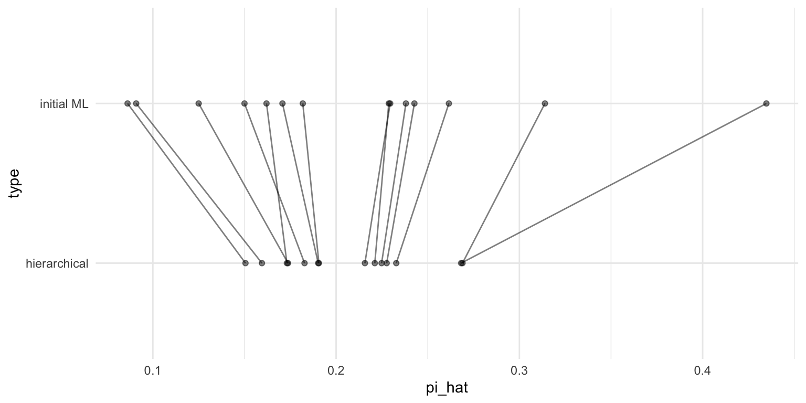
Two approaches, plus a compromise
It’s helpful to think of these approaches in terms of the amount of information they borrow across groups.
- No Pooling. Assume the groups are different, and that nothing can be learned from the other groups. Estimate each group separately.
- Complete Pooling. Assume the groups are identical. Collapse all the groups together to estimate the single, common estimate.
- Partial Pooling. A compromise between the two extremes above. Assume the groups are different, but similar. Estimate the amount of similarity using the data, and pool the estimates toward a common estimate accordingly.
We did not implement complete pooling above, but we can do it here to compare the three approaches.
Code
# use the overall rate for each district
common_estimate <- tibble(district_id = unique(finland$district_id)) %>%
mutate(pi_hat = mean(finland$contacted))
# combine the three types
comb <- bind_rows(list("No Pooling" = estimates,
"Partial Pooling" = hier_estimates,
"Complete Pooling" = common_estimate),
.id = "type") %>%
mutate(type = reorder(type, pi_hat, var))
gg_comb2 <- ggplot(comb, aes(x = pi_hat, y = type)) +
geom_point(alpha = 0.5) +
geom_line(aes(group = district_id), alpha = 0.5)
print(gg_comb2) 
Key things
First, the 309 problem.
Second, \(\mu_i = \alpha_{j[i]} + \beta x_i\), where \(\alpha_j \sim N(0, \sigma^2_\alpha)\).
Third, the figure below.
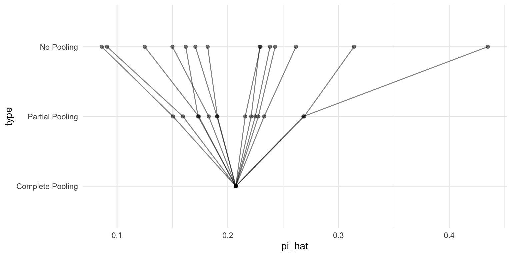
We stopped here on 10/21; we’ll pick up here next time.
Start with the simulate and recover exercise
Contact in the UK
uk <- crdata::uk |>
# make contacted an indicator
mutate(contacted = as.numeric(contacted == "Contacted")) |>
# mutate district_id to factor ordered by contact rate
mutate(district_id = str_remove(district_id, "District "),
district_id = reorder(district_id, contacted)) |>
glimpse()Rows: 756
Columns: 3
$ district_id <fct> 492, 492, 492, 492, 492, 374, 350, 350, 350, 463, 463, …
$ contacted <dbl> 0, 0, 0, 0, 0, 0, 1, 0, 0, 0, 0, 1, 0, 0, 0, 0, 0, 0, 1…
$ district_competitiveness <dbl> 0.484, 0.484, 0.484, 0.484, 0.484, 0.510, 0.540, 0.540,…
estimates <- uk %>%
group_by(district_id) %>%
summarize(pi_hat = mean(contacted),
n = n(),
se_hat = sqrt(pi_hat*(1 - pi_hat))/sqrt(n)) %>%
glimpse()Rows: 253
Columns: 4
$ district_id <fct> 319, 320, 323, 326, 328, 329, 330, 331, 337, 338, 339, 344, 347, 348…
$ pi_hat <dbl> 0, 0, 0, 0, 0, 0, 0, 0, 0, 0, 0, 0, 0, 0, 0, 0, 0, 0, 0, 0, 0, 0, 0,…
$ n <int> 1, 2, 4, 2, 3, 2, 2, 1, 4, 1, 1, 2, 2, 1, 1, 1, 2, 2, 6, 4, 1, 3, 1,…
$ se_hat <dbl> 0, 0, 0, 0, 0, 0, 0, 0, 0, 0, 0, 0, 0, 0, 0, 0, 0, 0, 0, 0, 0, 0, 0,…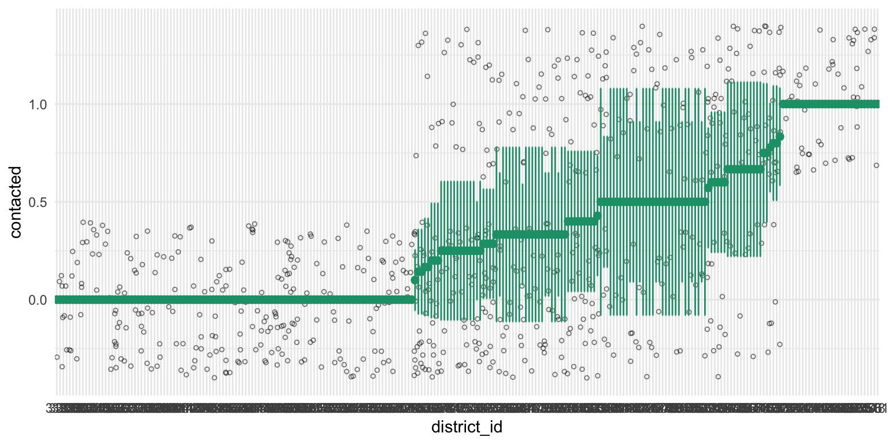
complete_pooling <- tibble(district_id = unique(uk$district_id)) %>%
mutate(pi_hat = mean(uk$contacted)) %>%
glimpse()Rows: 253
Columns: 2
$ district_id <fct> 492, 374, 350, 463, 393, 366, 432, 375, 385, 377, 378, 461, 387, 367…
$ pi_hat <dbl> 0.32, 0.32, 0.32, 0.32, 0.32, 0.32, 0.32, 0.32, 0.32, 0.32, 0.32, 0.…glmer(formula = contacted ~ (1 | district_id), data = uk, family = binomial)
coef.est coef.se
-0.85 0.10
Error terms:
Groups Name Std.Dev.
district_id (Intercept) 0.71
Residual 1.00
---
number of obs: 756, groups: district_id, 253
AIC = 941.8, DIC = 694
deviance = 815.8 partial_pooling <- tibble(district_id = unique(uk$district_id)) %>%
mutate(pi_hat = predict(fit, newdata = ., type = "response")) %>%
arrange(district_id) %>%
glimpse()Rows: 253
Columns: 2
$ district_id <fct> 319, 320, 323, 326, 328, 329, 330, 331, 337, 338, 339, 344, 347, 348…
$ pi_hat <dbl> 0.271, 0.249, 0.216, 0.249, 0.231, 0.249, 0.249, 0.271, 0.216, 0.271…comb <- bind_rows(list("No Pooling" = no_pooling,
"Partial Pooling" = partial_pooling,
"Complete Pooling" = complete_pooling),
.id = "type") %>%
mutate(type = reorder(type, pi_hat, var)) %>%
arrange(district_id) %>%
glimpse()Rows: 759
Columns: 3
$ type <fct> No Pooling, Partial Pooling, Complete Pooling, No Pooling, Partial P…
$ district_id <fct> 319, 319, 319, 320, 320, 320, 323, 323, 323, 326, 326, 326, 328, 328…
$ pi_hat <dbl> 0.000, 0.271, 0.320, 0.000, 0.249, 0.320, 0.000, 0.216, 0.320, 0.000…
Contact in the UK (w/ predictors!)
We can also add predictors of the random parameters, such as the competitiveness of the district.
Rows: 253
Columns: 2
$ district_id <fct> 492, 374, 350, 463, 393, 366, 432, 375, 385, 377, 378, …
$ district_competitiveness <dbl> 0.484, 0.510, 0.540, 0.454, 0.429, 0.676, 0.603, 0.588,…Rows: 253
Columns: 3
$ district_id <fct> 319, 320, 323, 326, 328, 329, 330, 331, 337, 338, 339, …
$ pi_hat <dbl> 0.271, 0.249, 0.216, 0.249, 0.231, 0.249, 0.249, 0.271,…
$ district_competitiveness <dbl> 0.584, 0.658, 0.657, 0.453, 0.676, 0.686, 0.659, 0.679,…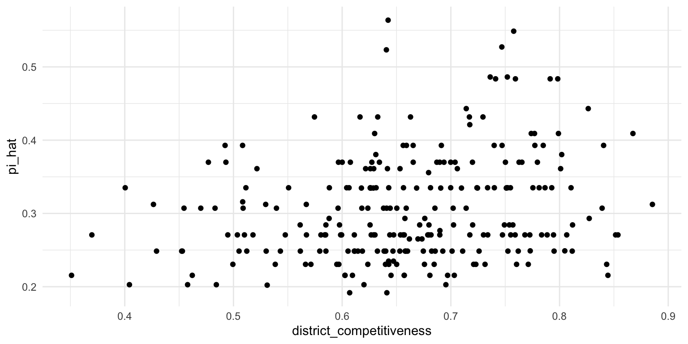
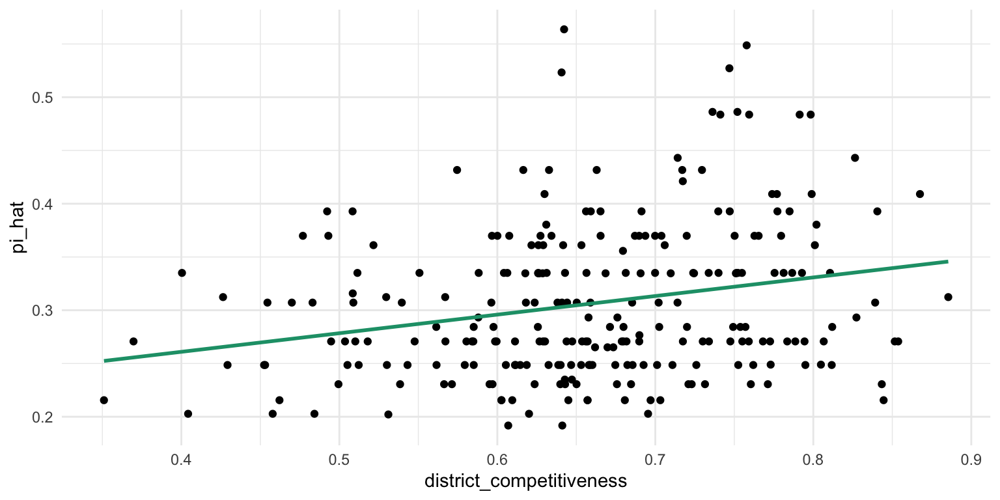
Hey! We should build this directly into our model.
f <- contacted ~ district_competitiveness + (1 | district_id)
fit <- glmer(f, data = uk, family = binomial)
arm::display(fit)glmer(formula = contacted ~ district_competitiveness + (1 | district_id),
data = uk, family = binomial)
coef.est coef.se
(Intercept) -3.40 0.65
district_competitiveness 3.87 0.96
Error terms:
Groups Name Std.Dev.
district_id (Intercept) 0.60
Residual 1.00
---
number of obs: 756, groups: district_id, 253
AIC = 927.2, DIC = 740
deviance = 830.5 partial_pooling <- uk %>%
select(district_id, district_competitiveness) %>%
distinct() %>%
mutate(pi_hat = predict(fit, newdata = ., type = "response")) %>%
glimpse()Rows: 253
Columns: 3
$ district_id <fct> 492, 374, 350, 463, 393, 366, 432, 375, 385, 377, 378, …
$ district_competitiveness <dbl> 0.484, 0.510, 0.540, 0.454, 0.429, 0.676, 0.603, 0.588,…
$ pi_hat <dbl> 0.144, 0.183, 0.230, 0.185, 0.137, 0.303, 0.204, 0.258,…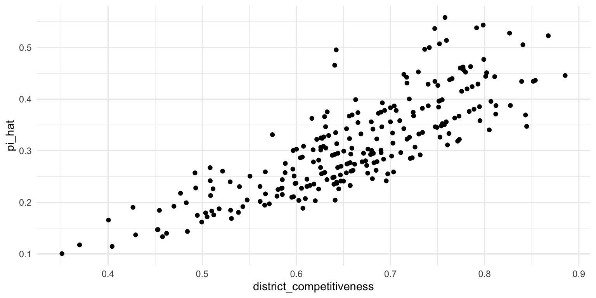
comb <- bind_rows(list("No Pooling" = no_pooling,
"Partial Pooling" = partial_pooling,
"Complete Pooling" = complete_pooling),
.id = "type") %>%
mutate(type = reorder(type, pi_hat, var)) %>%
glimpse()Rows: 759
Columns: 4
$ type <fct> No Pooling, No Pooling, No Pooling, No Pooling, No Pool…
$ district_id <fct> 319, 320, 323, 326, 328, 329, 330, 331, 337, 338, 339, …
$ pi_hat <dbl> 0, 0, 0, 0, 0, 0, 0, 0, 0, 0, 0, 0, 0, 0, 0, 0, 0, 0, 0…
$ district_competitiveness <dbl> NA, NA, NA, NA, NA, NA, NA, NA, NA, NA, NA, NA, NA, NA,…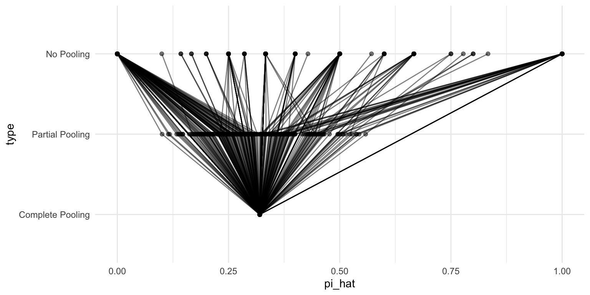
A simulation exercise in R
Contact in Several Countries
\[ \text{Pr}(\text{Contacted}_{i} = 1) = \text{logit}^{-1}(\alpha_{jk} + {\bf X}_i\beta) \] \[ \alpha_{jk} \sim N(\gamma_{0k} + \gamma_{1k}\text{Competitiveness}_j, \sigma^2_{\alpha}) \text{ for } j = 1, 2,..., J \]
\[ \begin{pmatrix} \gamma_{0k} \\ \gamma_{1k} \end{pmatrix} \sim {\large} N\begin{pmatrix} \begin{pmatrix} \mu_{\gamma_{0}} \\ \mu_{\gamma_{1}} \end{pmatrix}, \begin{pmatrix} \sigma^2_{\gamma_{0}} & \rho\sigma_{\gamma_{0}}\sigma_{\gamma_{1}} \\ \rho\sigma_{\gamma_{0}}\sigma_{\gamma_{1}} & \sigma^2_{\gamma_{1}} \end{pmatrix}\end{pmatrix} \text{ , for }k = 1, 2, ..., K \]
\[ \mu_{\gamma_{0}} = \delta_{00} + \delta_{01}\text{Proportional Rules}_k \]
\[ \mu_{\gamma_{1}} = \delta_{10} + \delta_{11}\text{Proportional Rules}_k \]
Rows: 5,126
Columns: 5
$ election_id <chr> "Canada", "Canada", "Canada", "Canada", "Canada", "Cana…
$ district_id <chr> "Canada; District 7", "Canada; District 4", "Canada; Di…
$ contacted <fct> Contacted, Not Contacted, Not Contacted, Not Contacted,…
$ district_competitiveness <dbl> 0.740, 0.420, 0.692, 0.692, 0.610, 0.742, 0.742, 0.742,…
$ electoral_rules <fct> SMD, SMD, SMD, SMD, SMD, SMD, SMD, SMD, SMD, SMD, SMD, …We can fit this model with lmer(), but this relatively small model is too big or complex.
Stan would have no problems with this one…
And show the estimates.
glmer(formula = contacted ~ district_competitiveness * electoral_rules +
(1 | district_id) + (1 + district_competitiveness | election_id),
data = rainey, family = binomial)
coef.est coef.se z value Pr(>|z|)
(Intercept) -2.35 0.59 -4.01 0.00
district_competitiveness 1.21 0.81 1.49 0.14
electoral_rulesSMD -0.74 0.72 -1.03 0.30
district_competitiveness:electoral_rulesSMD 3.07 1.03 2.99 0.00
Error terms:
Groups Name Std.Dev. Corr
district_id (Intercept) 0.47
election_id (Intercept) 0.18
district_competitiveness 0.27 1.00
Residual 1.00
---
number of obs: 5126, groups: district_id, 567; election_id, 5
AIC = 5580.3, DIC = 5131
deviance = 5347.5 Using the lmer()-like formula, we can fit the hiearchical model with Stan.
And it fits in less than 10 minutes. This took hours or days in 2012 with JAGS.
Family: bernoulli
Links: mu = logit
Formula: contacted ~ district_competitiveness * electoral_rules + (1 | district_id) + (1 + district_competitiveness | election_id)
Data: rainey (Number of observations: 5126)
Draws: 10 chains, each with iter = 4000; warmup = 2000; thin = 1;
total post-warmup draws = 20000
Multilevel Hyperparameters:
~district_id (Number of levels: 567)
Estimate Est.Error l-95% CI u-95% CI Rhat Bulk_ESS Tail_ESS
sd(Intercept) 0.52 0.08 0.38 0.69 1.00 4820 8397
~election_id (Number of levels: 5)
Estimate Est.Error l-95% CI u-95% CI Rhat
sd(Intercept) 0.62 0.53 0.02 1.97 1.00
sd(district_competitiveness) 0.88 0.69 0.04 2.65 1.00
cor(Intercept,district_competitiveness) -0.04 0.57 -0.94 0.95 1.00
Bulk_ESS Tail_ESS
sd(Intercept) 5614 3336
sd(district_competitiveness) 4127 2102
cor(Intercept,district_competitiveness) 7736 8624
Regression Coefficients:
Estimate Est.Error l-95% CI u-95% CI Rhat
Intercept -2.37 0.76 -3.90 -0.87 1.00
district_competitiveness 1.29 1.05 -0.72 3.41 1.00
electoral_rulesSMD -0.76 1.00 -2.82 1.24 1.00
district_competitiveness:electoral_rulesSMD 3.08 1.45 0.17 5.95 1.00
Bulk_ESS Tail_ESS
Intercept 5723 9078
district_competitiveness 4809 6835
electoral_rulesSMD 6075 8118
district_competitiveness:electoral_rulesSMD 4122 3063
Draws were sampled using sample(hmc). For each parameter, Bulk_ESS
and Tail_ESS are effective sample size measures, and Rhat is the potential
scale reduction factor on split chains (at convergence, Rhat = 1). Family: bernoulli
Links: mu = logit
Formula: contacted ~ district_competitiveness * electoral_rules + (1 | district_id) + (1 + district_competitiveness | election_id)
Data: rainey (Number of observations: 5126)
Draws: 10 chains, each with iter = 4000; warmup = 2000; thin = 1;
total post-warmup draws = 20000
Multilevel Hyperparameters:
~district_id (Number of levels: 567)
Estimate Est.Error l-95% CI u-95% CI Rhat Bulk_ESS Tail_ESS
sd(Intercept) 0.52 0.08 0.38 0.69 1.00 4820 8397
~election_id (Number of levels: 5)
Estimate Est.Error l-95% CI u-95% CI Rhat
sd(Intercept) 0.62 0.53 0.02 1.97 1.00
sd(district_competitiveness) 0.88 0.69 0.04 2.65 1.00
cor(Intercept,district_competitiveness) -0.04 0.57 -0.94 0.95 1.00
Bulk_ESS Tail_ESS
sd(Intercept) 5614 3336
sd(district_competitiveness) 4127 2102
cor(Intercept,district_competitiveness) 7736 8624
Regression Coefficients:
Estimate Est.Error l-95% CI u-95% CI Rhat
Intercept -2.37 0.76 -3.90 -0.87 1.00
district_competitiveness 1.29 1.05 -0.72 3.41 1.00
electoral_rulesSMD -0.76 1.00 -2.82 1.24 1.00
district_competitiveness:electoral_rulesSMD 3.08 1.45 0.17 5.95 1.00
Bulk_ESS Tail_ESS
Intercept 5723 9078
district_competitiveness 4809 6835
electoral_rulesSMD 6075 8118
district_competitiveness:electoral_rulesSMD 4122 3063
Draws were sampled using sample(hmc). For each parameter, Bulk_ESS
and Tail_ESS are effective sample size measures, and Rhat is the potential
scale reduction factor on split chains (at convergence, Rhat = 1).grid <- rainey %>%
select(district_id,
election_id,
district_competitiveness,
electoral_rules)
p <- predictions(stan_fit,
newdata = grid) |>
glimpse()Rows: 5,126
Columns: 9
$ rowid <int> 1, 2, 3, 4, 5, 6, 7, 8, 9, 10, 11, 12, 13, 14, 15, 16, …
$ estimate <dbl> 0.696, 0.317, 0.563, 0.563, 0.568, 0.631, 0.631, 0.631,…
$ conf.low <dbl> 0.460, 0.141, 0.326, 0.326, 0.339, 0.396, 0.396, 0.396,…
$ conf.high <dbl> 0.866, 0.563, 0.768, 0.768, 0.789, 0.816, 0.816, 0.816,…
$ district_id <chr> "Canada; District 7", "Canada; District 4", "Canada; Di…
$ election_id <chr> "Canada", "Canada", "Canada", "Canada", "Canada", "Cana…
$ district_competitiveness <dbl> 0.740, 0.420, 0.692, 0.692, 0.610, 0.742, 0.742, 0.742,…
$ electoral_rules <fct> SMD, SMD, SMD, SMD, SMD, SMD, SMD, SMD, SMD, SMD, SMD, …
$ df <dbl> Inf, Inf, Inf, Inf, Inf, Inf, Inf, Inf, Inf, Inf, Inf, …p_typical <- predictions(
stan_fit,
newdata = grid,
re_formula = ~ (1 + district_competitiveness | election_id)
) |>
glimpse()Rows: 5,126
Columns: 9
$ rowid <int> 1, 2, 3, 4, 5, 6, 7, 8, 9, 10, 11, 12, 13, 14, 15, 16, …
$ estimate <dbl> 0.659, 0.297, 0.607, 0.607, 0.510, 0.662, 0.662, 0.662,…
$ conf.low <dbl> 0.605, 0.229, 0.559, 0.559, 0.466, 0.607, 0.607, 0.607,…
$ conf.high <dbl> 0.711, 0.372, 0.652, 0.652, 0.555, 0.713, 0.713, 0.713,…
$ district_id <chr> "Canada; District 7", "Canada; District 4", "Canada; Di…
$ election_id <chr> "Canada", "Canada", "Canada", "Canada", "Canada", "Cana…
$ district_competitiveness <dbl> 0.740, 0.420, 0.692, 0.692, 0.610, 0.742, 0.742, 0.742,…
$ electoral_rules <fct> SMD, SMD, SMD, SMD, SMD, SMD, SMD, SMD, SMD, SMD, SMD, …
$ df <dbl> Inf, Inf, Inf, Inf, Inf, Inf, Inf, Inf, Inf, Inf, Inf, …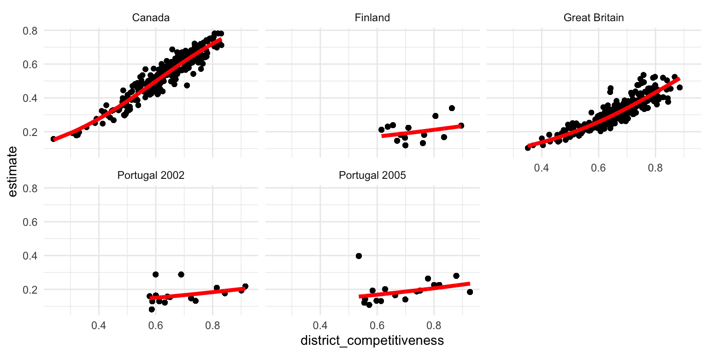